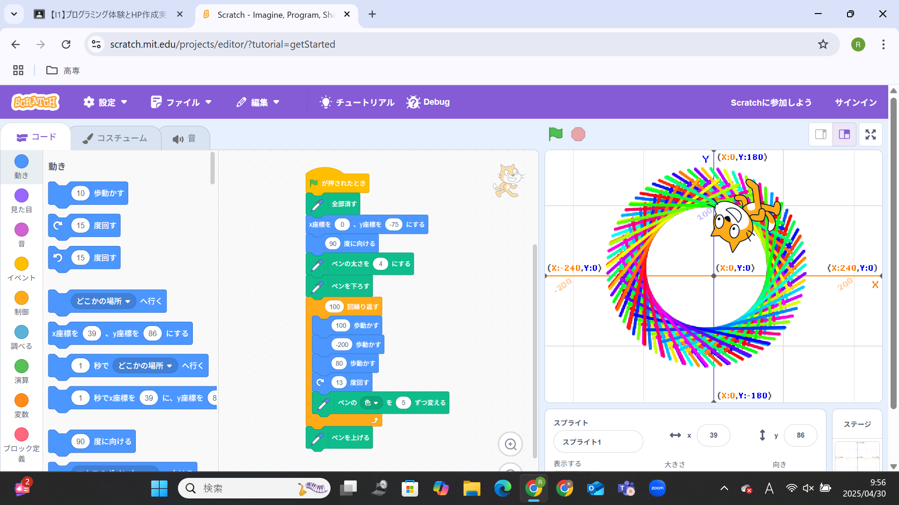
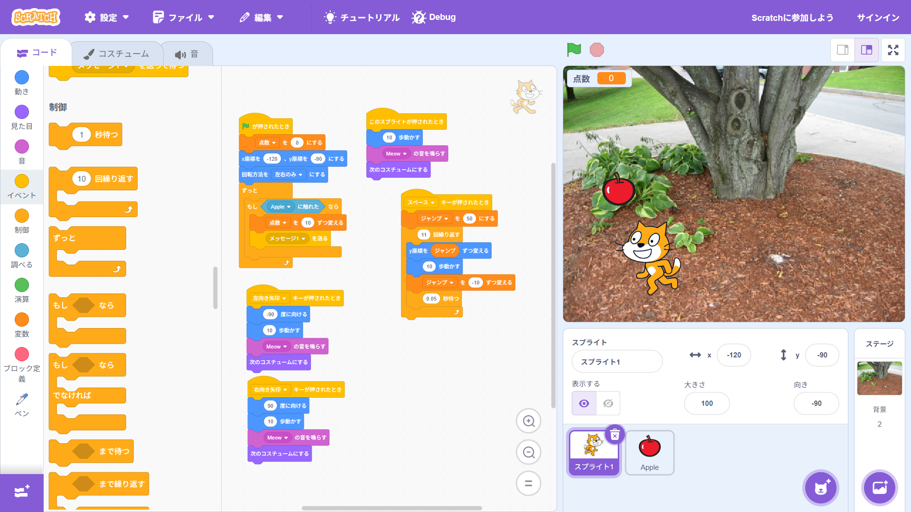

1週目のレポート ： 公大高専１年実習I-1
4a班2番 mipo09
第1週目
1-1 サイエンスアート

1.内容
Scratchを使ってサイエンスアートを描いた。
2.感想
回転する角度を変えたり、進む歩数を変えたりするといろいろな形ができて面白かった。
普通に絵を描くよりどんな形ができるか想像できないから面白いと思った。
1-2 ゲーム

1.内容
Scratchを使って上から落ちてくるリンゴをキャッチするゲームを作った
2.感想
作ったのは一つのリンゴが落ちてくるだけだったからもっと応用していろんなものが落ちてくるようにしたり
真下に落ちるだけでなく斜めに落ちるように作ってみたいなと思った。
1-3 ホームページ作成
私のホームページ
1.内容
githubを使用して自分のホームページを作成した。
2.感想
今回作成したホームページは必要なところを書き換えるだけだったから次作るなら0から作ってみたいなと思った。
各ページへのリンク
1週目のレポート
2週目のレポート
3週目のレポート
私のホームページ